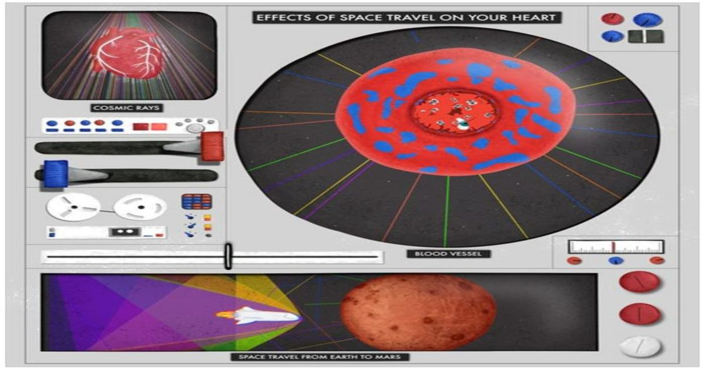

Путешествие на Марс может разбить ваше сердце - в буквальном смысле
Когда астронавты впервые отправятся на Марс или где-либо еще в глубоком космосе, им придется столкнуться с двумя проблемами, от которых сама наша планета защищает нас на своей поверхности - радиация и невесомость.
Ученые уже знают, что и то, и другое может оказать глубокое влияние на организм человека, но сколько из них, и как долго это воздействие может длиться, остается загадкой.
Новая статья исследователей из Медицинского колледжа Висконсина, опубликованная в PLoS One, TACK